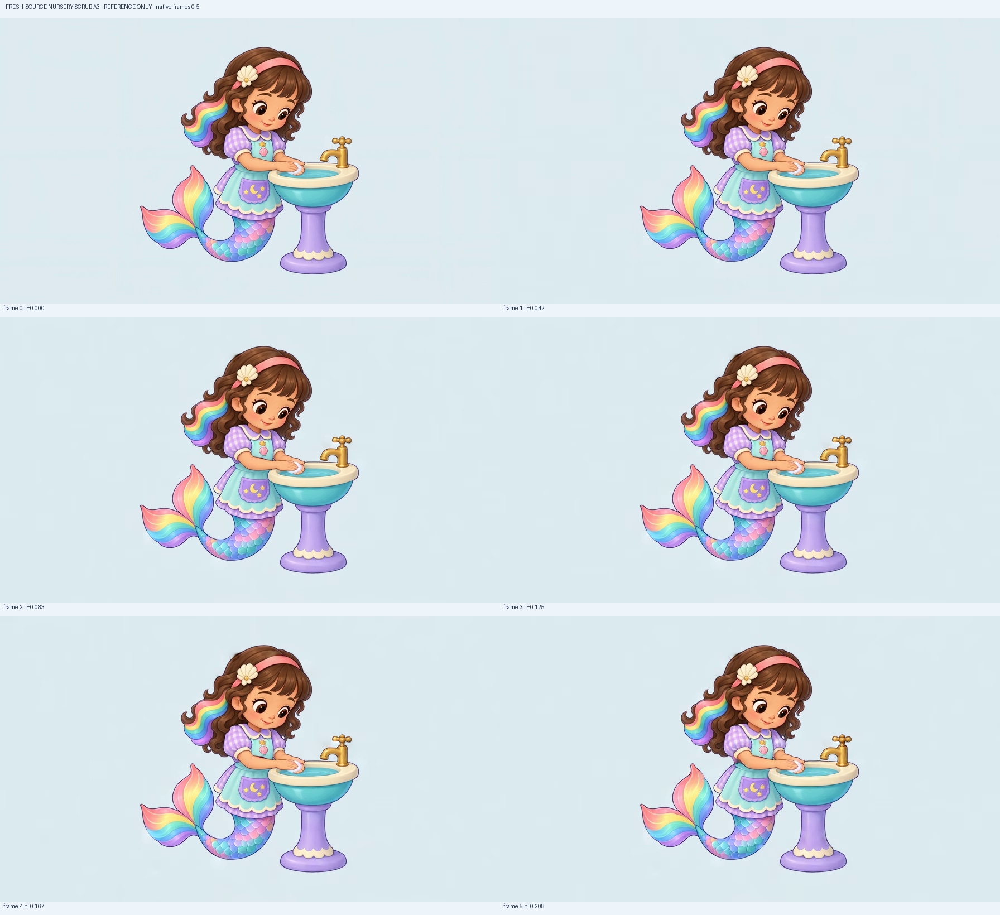
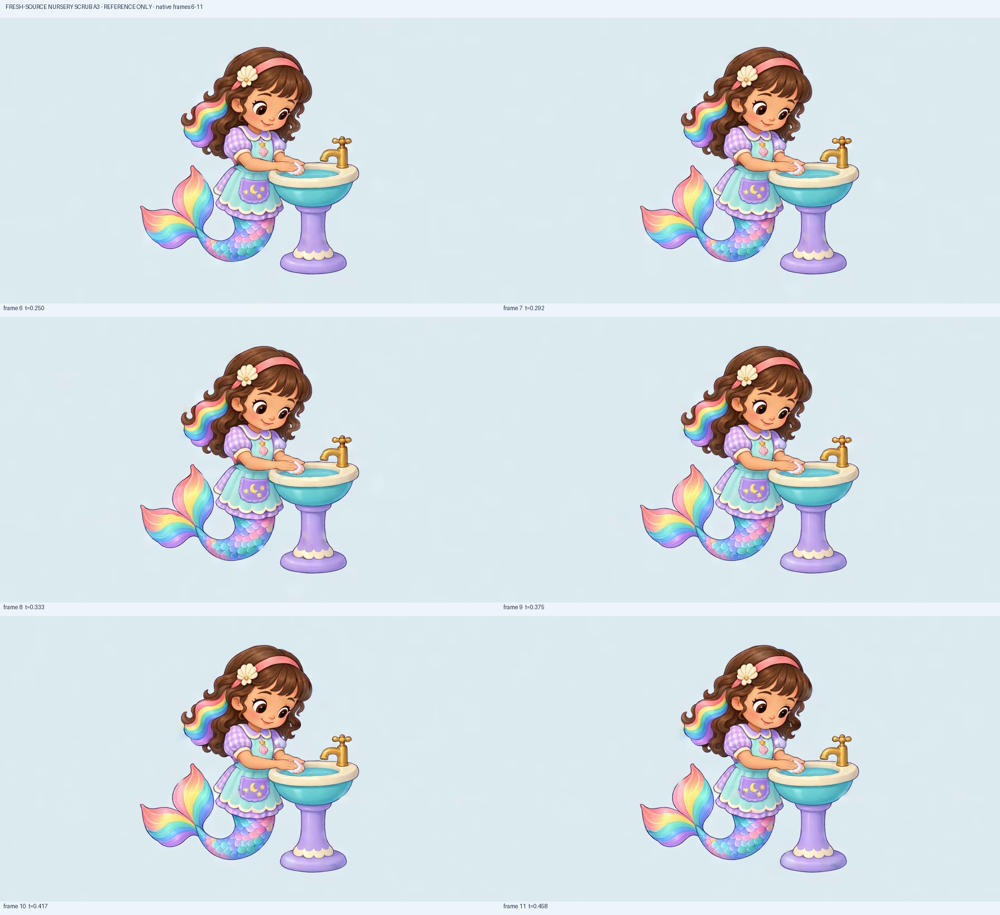
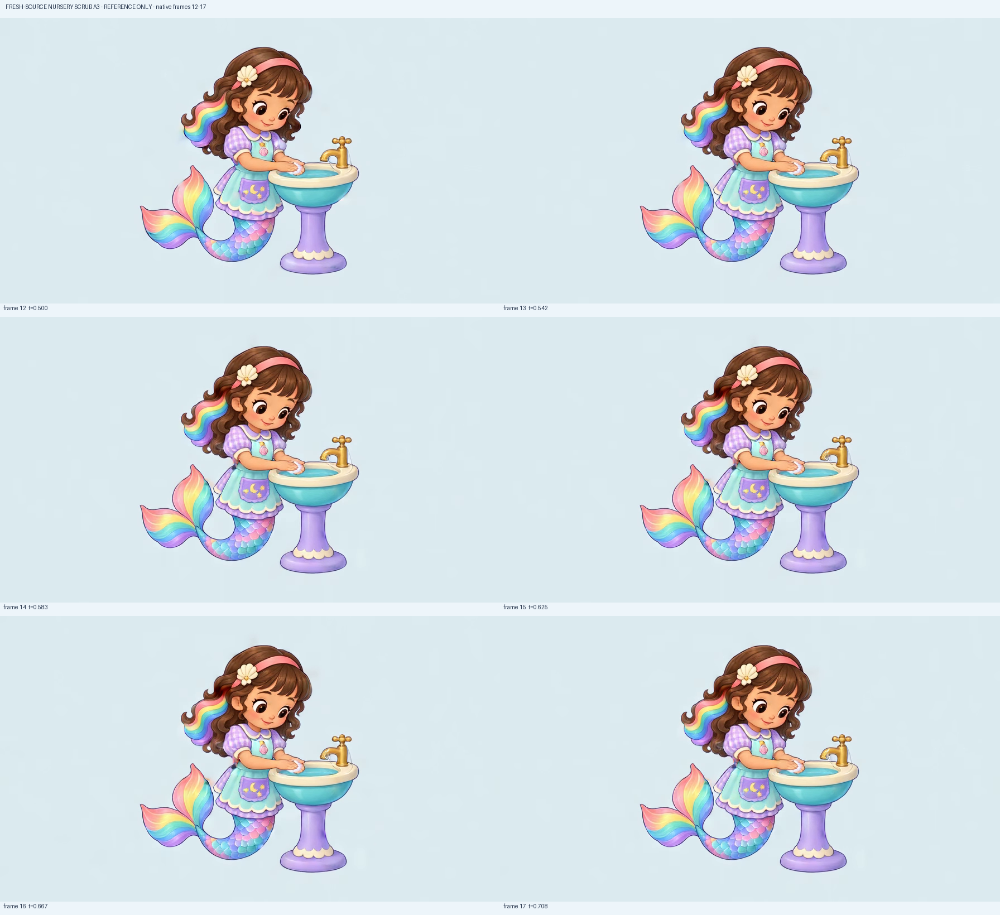
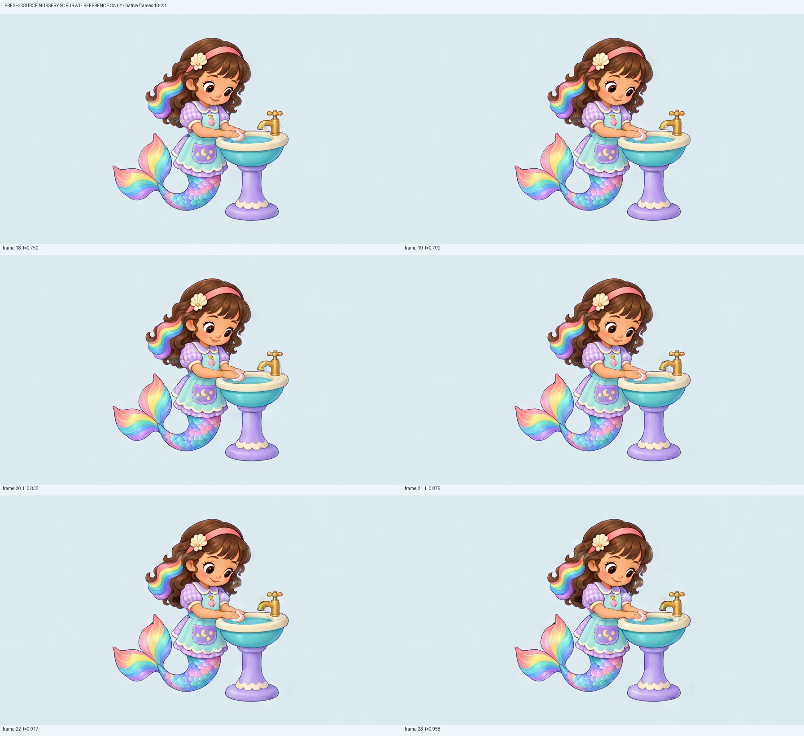
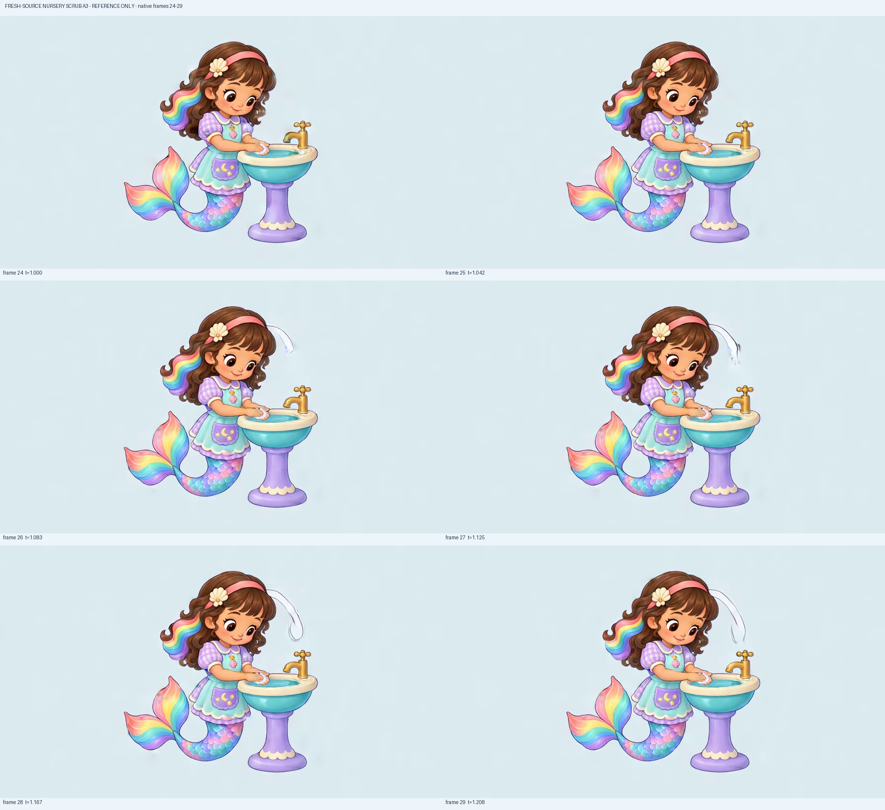
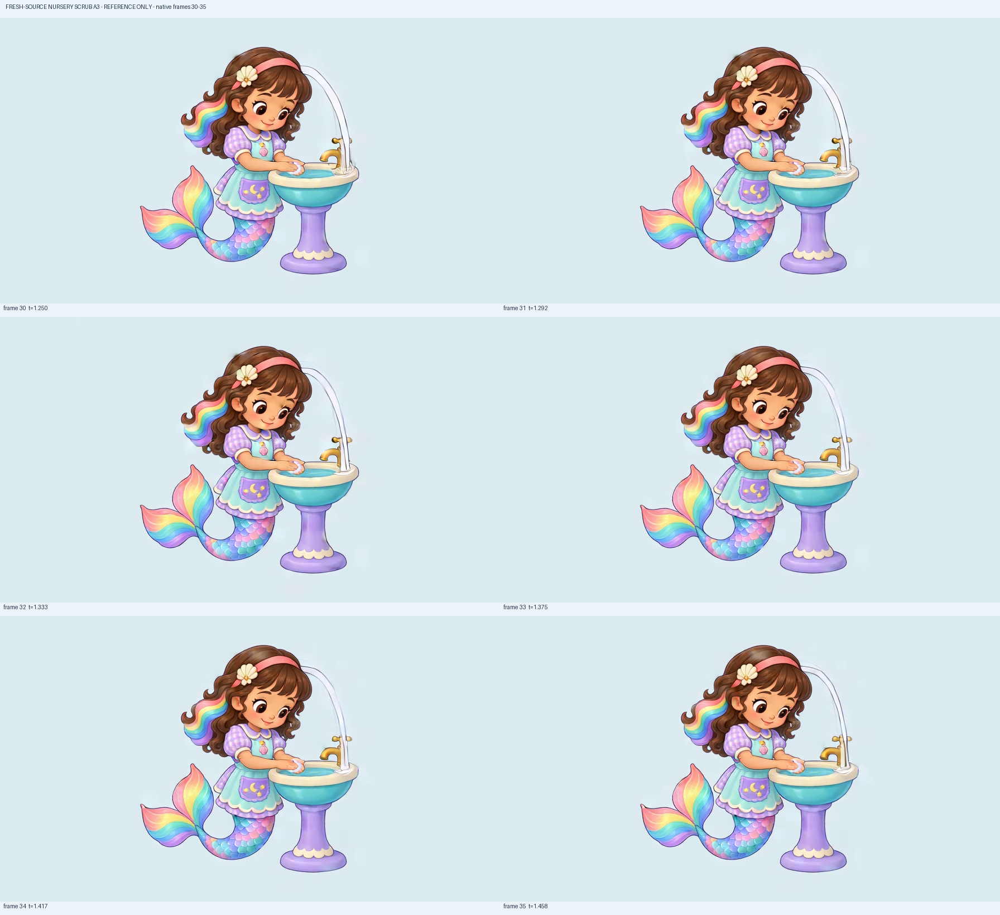
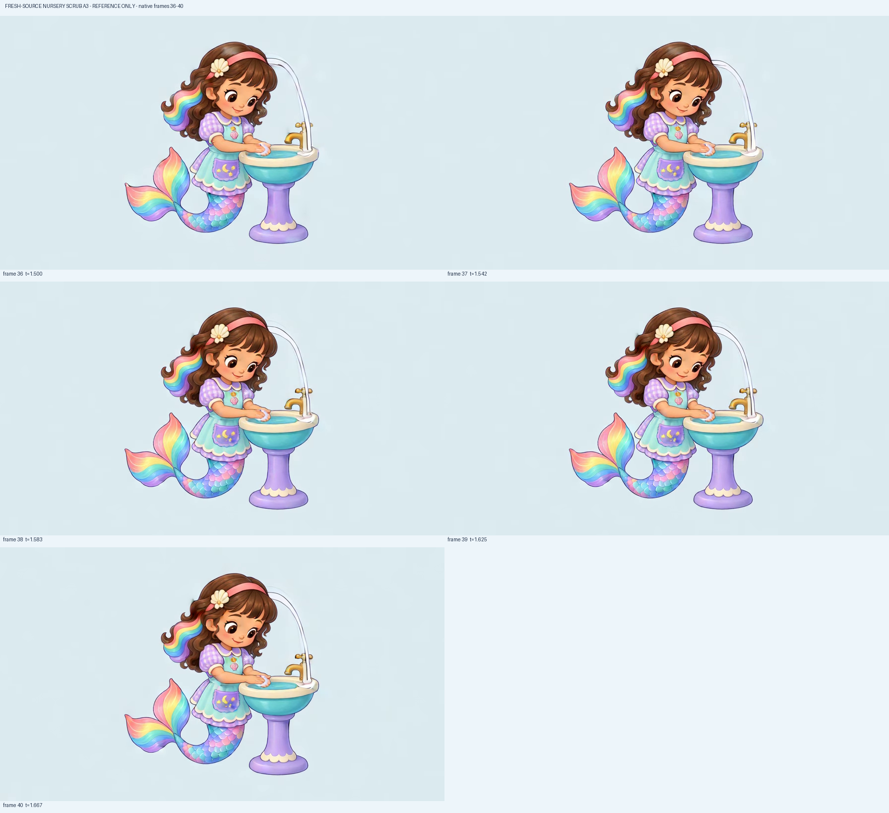

No two readable reciprocal palm strokes are established. Small lather/edge changes accompany an almost held hand-contact pose.
Fresh attentive source, same rub prompt/seed/admitted settings/developed workflow as A2. Every41 native frame directly reviewed on7 complete native-size boards plus13 full-native details. Attention4.6 improves; reciprocal rubbing2.8 and fixture/material3.0 fail. The hands remain nearly held; late frames invent a white head-to-basin arch.
Current game wash3.9/attention3.8 and fresh still4.5 remain unchanged. This is a rejected local motion reference, with no runtime/cinematic/device/child/owner/all-job acceptance.
No two readable reciprocal palm strokes are established. Small lather/edge changes accompany an almost held hand-contact pose.
Both forearms remain connected and low palms maintain contact above the basin. Partial soap occlusion and absence of a readable slide keep this distinct from accepted washing.
The fresh source clearly looks down toward the joined hands; that attention remains through all41 frames. This is a reference opinion, not a repair of the current game attention3.8.
The pink headband, cream shell-flower, brown curls/trailing rainbow and simplified child face remain recognizable. Late phantom material beside the head is separately rejected.
The main apron/gingham/tail contours and colors stay recognizable, but pocket/star and scale/highlight shimmer remain. No seamless source-family or gameplay transition is established.
From the middle, extra pale traces change the tap/rim. From26 the new white arc grows beside the head, ending as a tall head-to-basin arch. This is not contained hand lather or an off-tap fixture.
Entry retains source contact; exit adds a large invented white arch. The take cannot return cleanly to its source or claim a loop.
Attentive face improves, but no meaningful scrub and a severe late invented-material event fail the4.5 floor. Reject and preserve; do not bind to the game.







Frame0 at0.000s: Initial low joined palms/down gaze and intact source identity; this static contact does not demonstrate reciprocal rubbing. Down gaze remains readable. Current game and still-source opinions are unchanged.
Unchanged full native896×512 imagea7ed46b7e87077adb28d94e86be318aa09c809016aea2c05ab13335f65d8eb30
Frame1 at0.042s: Palms remain almost at the initial contact point; minor outline/lather changes do not show a stroke across the opposite palm. Down gaze remains readable. Current game and still-source opinions are unchanged.
Unchanged full native896×512 image8120c1efbbf973fdd3ed39794cda6a886742cb7323c03601f36bf9a0e1767825
Frame2 at0.083s: Palms remain almost at the initial contact point; minor outline/lather changes do not show a stroke across the opposite palm. Down gaze remains readable. Current game and still-source opinions are unchanged.
Unchanged full native896×512 imageb2214a67c67c50ea835a18028af43851bd24bfe1a5f244ed3d4b0d6a33c0fb2b
Frame3 at0.125s: Palms remain almost at the initial contact point; minor outline/lather changes do not show a stroke across the opposite palm. Down gaze remains readable. Current game and still-source opinions are unchanged.
Unchanged full native896×512 imagecc8159f38e6c0220b60043141eaa49e9c0e0515601c162475ff0ccab84e413b1
Frame4 at0.167s: Palms remain almost at the initial contact point; minor outline/lather changes do not show a stroke across the opposite palm. Down gaze remains readable. Current game and still-source opinions are unchanged.
Unchanged full native896×512 image090735c152ed8d8f37b67313875cda305e56c3fa90828b91234b41ca89caecb6
Frame5 at0.208s: Palms remain almost at the initial contact point; minor outline/lather changes do not show a stroke across the opposite palm. Down gaze remains readable. Current game and still-source opinions are unchanged.
Unchanged full native896×512 image0b8c452bab9c0d2b22eccaeab93b83baebc6f654b3dae8a0ef77efad28c84fc6
Frame6 at0.250s: Palms remain almost at the initial contact point; minor outline/lather changes do not show a stroke across the opposite palm. Down gaze remains readable. Current game and still-source opinions are unchanged.
Unchanged full native896×512 image3b4d7b0d67b7345a7e4706db656ba2680c99636f5acec7a47dc12595952c072e
Frame7 at0.292s: Palms remain almost at the initial contact point; minor outline/lather changes do not show a stroke across the opposite palm. Down gaze remains readable. Current game and still-source opinions are unchanged.
Unchanged full native896×512 image06228716236335b7b470f1bd5232489f7a356bf3435e4e38ebcbccaea7726b54
Frame8 at0.333s: Palms remain almost at the initial contact point; minor outline/lather changes do not show a stroke across the opposite palm. Down gaze remains readable. Current game and still-source opinions are unchanged.
Unchanged full native896×512 imagea2df80ea1ab6a726f2e38c66e90366bc0976bd5b1ee8d34a280983e707910f9f
Frame9 at0.375s: Palms remain almost at the initial contact point; minor outline/lather changes do not show a stroke across the opposite palm. Down gaze remains readable. Current game and still-source opinions are unchanged.
Unchanged full native896×512 image0ab2ad6e066aa6cbee5b37a734badfea02e8ff58a948c8e648eb6575450c42f7
Frame10 at0.417s: Palms remain almost at the initial contact point; minor outline/lather changes do not show a stroke across the opposite palm. Down gaze remains readable. Current game and still-source opinions are unchanged.
Unchanged full native896×512 image9a0c635f457ab418845941a1b1f20242db58c823cf6e87e1682833f3bb10740d
Frame11 at0.458s: An extra pale trace appears around the tap/spout/rim while the palms remain essentially static. The off-tap/source fixture is no longer fully stable. Down gaze remains readable. Current game and still-source opinions are unchanged.
Unchanged full native896×512 image0bb6985b7941f3559e248aea98f7eb16774d5d74023d461636d5763669036655
Frame12 at0.500s: An extra pale trace appears around the tap/spout/rim while the palms remain essentially static. The off-tap/source fixture is no longer fully stable. Down gaze remains readable. Current game and still-source opinions are unchanged.
Unchanged full native896×512 image46f75776ed1e36a376ae4824566418847877da5c906c76bf5e863991e8f6955c
Frame13 at0.542s: An extra pale trace appears around the tap/spout/rim while the palms remain essentially static. The off-tap/source fixture is no longer fully stable. Down gaze remains readable. Current game and still-source opinions are unchanged.
Unchanged full native896×512 image4422e6792e02db0f91368f836f74380caf5c97903b8783cc2c7b01afa754d538
Frame14 at0.583s: An extra pale trace appears around the tap/spout/rim while the palms remain essentially static. The off-tap/source fixture is no longer fully stable. Down gaze remains readable. Current game and still-source opinions are unchanged.
Unchanged full native896×512 image4d84fb720928575b7f1e743608e5bdd48a64f5886a7ca7f037c95e66aa844cac
Frame15 at0.625s: An extra pale trace appears around the tap/spout/rim while the palms remain essentially static. The off-tap/source fixture is no longer fully stable. Down gaze remains readable. Current game and still-source opinions are unchanged.
Unchanged full native896×512 image2af06f2c7f85bf6da0f91999991bad6045ab47c395e4aef0defa4db37e9124c5
Frame16 at0.667s: An extra pale trace appears around the tap/spout/rim while the palms remain essentially static. The off-tap/source fixture is no longer fully stable. Down gaze remains readable. Current game and still-source opinions are unchanged.
Unchanged full native896×512 image5e5ee70e38aef4cbe49c7495d76354ef0941ec65ab6cbc435285b6b42899b4c9
Frame17 at0.708s: An extra pale trace appears around the tap/spout/rim while the palms remain essentially static. The off-tap/source fixture is no longer fully stable. Down gaze remains readable. Current game and still-source opinions are unchanged.
Unchanged full native896×512 image7176f56d06fa106b5358d23f48dc97ace9be0b1128edcbf87c07b0a4b1785b5e
Frame18 at0.750s: An extra pale trace appears around the tap/spout/rim while the palms remain essentially static. The off-tap/source fixture is no longer fully stable. Down gaze remains readable. Current game and still-source opinions are unchanged.
Unchanged full native896×512 image024b9d492b0e4a1c9419b56fdf081c48fb8bdc892ca619e78be27fa979320987
Frame19 at0.792s: An extra pale trace appears around the tap/spout/rim while the palms remain essentially static. The off-tap/source fixture is no longer fully stable. Down gaze remains readable. Current game and still-source opinions are unchanged.
Unchanged full native896×512 imagedc2b1857645f1e53c270b202fee607a63aad58f178c5d52c12d2a06573cf460d
Frame20 at0.833s: An extra pale trace appears around the tap/spout/rim while the palms remain essentially static. The off-tap/source fixture is no longer fully stable. Down gaze remains readable. Current game and still-source opinions are unchanged.
Unchanged full native896×512 image8d934422635e4da446d0d14e2863d3734fc1116a486911fc7278a85196d8b22b
Frame21 at0.875s: An extra pale trace appears around the tap/spout/rim while the palms remain essentially static. The off-tap/source fixture is no longer fully stable. Down gaze remains readable. Current game and still-source opinions are unchanged.
Unchanged full native896×512 image454cbbb90a9fdb78039f55cc3af7a2c25ae5708b15240cd835836e07a46ab010
Frame22 at0.917s: An extra pale trace appears around the tap/spout/rim while the palms remain essentially static. The off-tap/source fixture is no longer fully stable. Down gaze remains readable. Current game and still-source opinions are unchanged.
Unchanged full native896×512 image20fa1bdca501ae88f400f64ff796bd0c8ec9edab58b607eccc9ae7d0c08c0eae
Frame23 at0.958s: An extra pale trace appears around the tap/spout/rim while the palms remain essentially static. The off-tap/source fixture is no longer fully stable. Down gaze remains readable. Current game and still-source opinions are unchanged.
Unchanged full native896×512 imageb5f8cd9f60511cf32403ad89cd0f907695aaacfc1d94e0f9bede5e5b5202c29f
Frame24 at1.000s: An extra pale trace appears around the tap/spout/rim while the palms remain essentially static. The off-tap/source fixture is no longer fully stable. Down gaze remains readable. Current game and still-source opinions are unchanged.
Unchanged full native896×512 image1c7c06b728cbd6e57ee8d78f23a0ce3467744910f05f5a29657181132bd24d11
Frame25 at1.042s: An extra pale trace appears around the tap/spout/rim while the palms remain essentially static. The off-tap/source fixture is no longer fully stable. Down gaze remains readable. Current game and still-source opinions are unchanged.
Unchanged full native896×512 image5a853260630cf7803420da3c9607e07dca3cde284afb15772abafbc80874e2cd
Frame26 at1.083s: A new curved white trace emerges beside/above the hair and grows toward the fixture, unrelated to the intended palm scrub. Down gaze remains readable. Current game and still-source opinions are unchanged.
Unchanged full native896×512 image2b5940afa5721558aed8bc249889546a1ff5953b30a6d2b567ad1b85d3f10596
Frame27 at1.125s: A new curved white trace emerges beside/above the hair and grows toward the fixture, unrelated to the intended palm scrub. Down gaze remains readable. Current game and still-source opinions are unchanged.
Unchanged full native896×512 imageb44087684c509fadfe24bac62aa92a23c8107931c44f22986cc55e5b51d102a8
Frame28 at1.167s: A new curved white trace emerges beside/above the hair and grows toward the fixture, unrelated to the intended palm scrub. Down gaze remains readable. Current game and still-source opinions are unchanged.
Unchanged full native896×512 imagef2d719824c8164481595ac9a3003648f0b1309d84f76c1090b8fbc1e16261635
Frame29 at1.208s: A new curved white trace emerges beside/above the hair and grows toward the fixture, unrelated to the intended palm scrub. Down gaze remains readable. Current game and still-source opinions are unchanged.
Unchanged full native896×512 image79686fecf9c0e534a8eb2535389a03bf4ba8c000c48a63237e84f0497c58600d
Frame30 at1.250s: A tall white outlined arch joins the hair area to the basin/tap base; the off-tap/contact/material story fails while the hands still do not perform two reciprocal rubs. Down gaze remains readable. Current game and still-source opinions are unchanged.
Unchanged full native896×512 image84e4ab21c91e8ef469780647e2637a37acbb84bec151c818f010fa60c9ffeeb3
Frame31 at1.292s: A tall white outlined arch joins the hair area to the basin/tap base; the off-tap/contact/material story fails while the hands still do not perform two reciprocal rubs. Down gaze remains readable. Current game and still-source opinions are unchanged.
Unchanged full native896×512 imagebe5a79f1b5f0c5cc3ec14ce3fe3619b47e7f7252bc09b4fa02f05ea0a76f50cb
Frame32 at1.333s: A tall white outlined arch joins the hair area to the basin/tap base; the off-tap/contact/material story fails while the hands still do not perform two reciprocal rubs. Down gaze remains readable. Current game and still-source opinions are unchanged.
Unchanged full native896×512 imagec2fd2701e8832880b6502c21a03cc67c1970193fcc6a471149e86c2f5e6fbee6
Frame33 at1.375s: A tall white outlined arch joins the hair area to the basin/tap base; the off-tap/contact/material story fails while the hands still do not perform two reciprocal rubs. Down gaze remains readable. Current game and still-source opinions are unchanged.
Unchanged full native896×512 imaged2e4e7244dfd81377185a5ee585fb15ba53bcb75c5ea8b0f15c9c40342d27512
Frame34 at1.417s: A tall white outlined arch joins the hair area to the basin/tap base; the off-tap/contact/material story fails while the hands still do not perform two reciprocal rubs. Down gaze remains readable. Current game and still-source opinions are unchanged.
Unchanged full native896×512 image2035dfbdf030cf12409622cec390a942e13fa3ac8c329cf7b9f48730525ba771
Frame35 at1.458s: A tall white outlined arch joins the hair area to the basin/tap base; the off-tap/contact/material story fails while the hands still do not perform two reciprocal rubs. Down gaze remains readable. Current game and still-source opinions are unchanged.
Unchanged full native896×512 image396e185427a440c2d149f2d9ad7cfcf9bc6997a05584eea1fc3315eb08bc9905
Frame36 at1.500s: A tall white outlined arch joins the hair area to the basin/tap base; the off-tap/contact/material story fails while the hands still do not perform two reciprocal rubs. Down gaze remains readable. Current game and still-source opinions are unchanged.
Unchanged full native896×512 image0b0105148faa115165590de550bf8f64a647cd5dadb1772dcacd457a9f025ca6
Frame37 at1.542s: A tall white outlined arch joins the hair area to the basin/tap base; the off-tap/contact/material story fails while the hands still do not perform two reciprocal rubs. Down gaze remains readable. Current game and still-source opinions are unchanged.
Unchanged full native896×512 imagef5d44159c9cb3127c65e4b246aae9c611ba86bd1ba3ed1248efd58978d242074
Frame38 at1.583s: A tall white outlined arch joins the hair area to the basin/tap base; the off-tap/contact/material story fails while the hands still do not perform two reciprocal rubs. Down gaze remains readable. Current game and still-source opinions are unchanged.
Unchanged full native896×512 imageb42ab593b6dbc2ff30f010aca9136fbf65430b628b9c37b0f02e1a19671e77dd
Frame39 at1.625s: A tall white outlined arch joins the hair area to the basin/tap base; the off-tap/contact/material story fails while the hands still do not perform two reciprocal rubs. Down gaze remains readable. Current game and still-source opinions are unchanged.
Unchanged full native896×512 imageee3dcedb5584792a63b9e5fd360eb7e9502325cec40c581da688b78328e94e78
Frame40 at1.667s: A tall white outlined arch joins the hair area to the basin/tap base; the off-tap/contact/material story fails while the hands still do not perform two reciprocal rubs. Down gaze remains readable. Current game and still-source opinions are unchanged.
Unchanged full native896×512 image636548773e770c1adb08caa49df8502e33a7c05f74ccfc3558c8d9e036018b44
Complete individual/frame review · Native render receipt · Preserved bound manifest · Source-only comparison · Preserved rejected A2 · Two fresh paintings/all22 source components · Individual job library